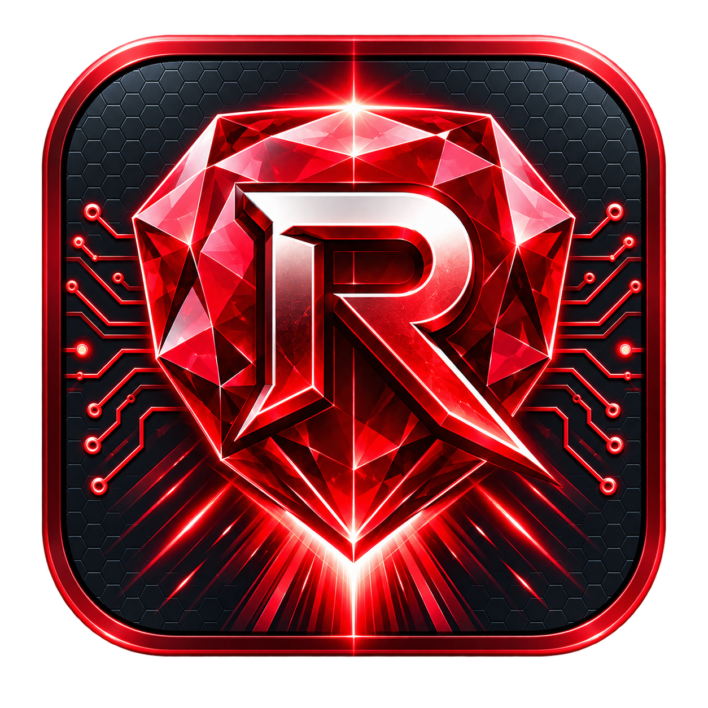

RubyAI NovaOuvrir Nova Web
Choisis l’installation Ruby qui répondra à tes messages. Un nouveau navigateur doit être approuvé sur le PC Ruby. Une session encore valide se rouvre directement.

RubyAI NovaChoisis l’installation Ruby qui répondra à tes messages. Un nouveau navigateur doit être approuvé sur le PC Ruby. Une session encore valide se rouvre directement.